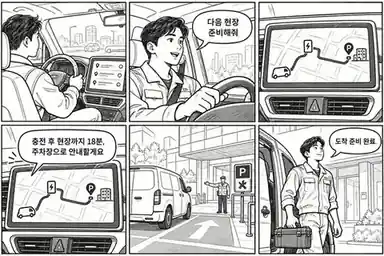

TOP PRIORITY / 업무·운영
현장 도착 보장 도우미
현장에 늦지 않고, 준비된 마음으로 일을 시작하는 안도.
TOP PRIORITY · SDK 통합 검증5개 SDK 통합 검증01 / IDEA NOTES
누구의 어떤 순간을 바꿀까.
| 같은 기준 | 검토 내용 |
|---|---|
| 첫 사용자 | 하루 여러 현장을 오가는 설치·정비·방문 서비스 기사 |
| 문제 정의 | 다음 현장의 위치, 충전·연료, 주차·하역 위치, 도착 준비가 휴대폰과 업무 시스템에 흩어진다. |
| 감성 포인트 | 늦지 않을까 하는 압박 대신, 현장에 도착하면 바로 일할 수 있다는 안도. |
| 실용적인 해결 | 음성 한마디로 다음 현장 준비를 시작하고, 경유·주차·도착 정보를 한 흐름으로 안내. |
| 차량에서의 가치 | 운전 중 눈을 돌리지 않고 차량 상태·현재 위치·길 안내를 함께 다룬다. |
02 / STORYBOARD
다음 현장을 준비하고, 한결 가벼운 마음으로 도착합니다.

- 일정 — 기사는 차량 화면에서 다음 현장을 확인합니다.
- 요청 — “다음 현장 준비해줘”라고 짧게 말합니다.
- 계획 — 차량 상태와 경로를 바탕으로 충전·주차 경유안을 준비합니다.
- 안내 — 차량이 도착 예상 시간과 주차 안내를 짧게 읽어 줍니다.
- 접근 — 실제 현장 접근 위치에서 서비스 주차 구역으로 안내합니다.
- 시작 — 기사는 준비된 상태로 도구를 들고 현장에 들어갑니다.
03 / IDEA NOTES
가치가 거래로 이어지는가.
| 같은 기준 | 검토 내용 |
|---|---|
| 지불 고객 | 방문 설치·정비·배송·영업 조직의 운영 관리자 |
| 수익 모델 가설 | 차량당 또는 현장 인력당 운영 구독 |
| 반복성 | 하루 여러 건의 현장 방문에서 반복되는 출발·경유·도착 준비 |
| 첫 고객 확보 | 현장 인력 3~5명의 소규모 운영팀과 실제 동선 인터뷰·동행 테스트 |
04 / IDEA NOTES
5개 SDK가 한 번의 현장 이동을 완성한다.
| SDK | 구현 역할 |
|---|---|
| SpeechToText | “다음 현장 준비해줘”, “충전 경유로 바꿔줘” 같은 짧은 음성 요청 |
| Vehicle | 지원되는 배터리·연료·주행 상태를 조회해 경유 제안의 근거로 사용 |
| NaviHelper | 다음 현장과 충전·주차 경유지를 포함해 길 안내를 요청 |
| FusedLocation | 현장 진입·서비스 주차장 근접 여부를 확인해 마지막 안내를 전환 |
| TextToSpeech | 운전 중 시선 분산을 줄이는 짧은 음성 안내와 확인 |
권한·차종별 지원 여부는 시작 시 capability로 점검합니다. 위치·음성 SDK가 준비되지 않았으면 정차 중 수동 선택과 화면 안내로 축소해 시연합니다.
05 / IDEA NOTES
심사에 필요한 증거와 첫 관문.
| 공식 평가 항목 | 보여줄 증거 |
|---|---|
| 차량특화성 | 차량 상태·내비·현재 위치를 운전 중 음성 흐름으로 결합한 현장 도착 경험 |
| 창의성 | 이동 관리가 아니라 현장 업무가 시작되는 순간을 보장하는 차량용 업무 경험 |
| 기술 활용성 | 5개 SDK의 정상·권한 거절·값 없음·통신 끊김 상황을 모두 시연 |
| 사업성 | 현장 지연·주차 탐색·운행 준비 비용을 줄일 수 있는지 운영팀과 검증 |
첫 번째 검증: 현장 기사에게 휴대폰 현장관리 앱보다 실제로 편한가.
담당 1
Vehicle·NaviHelper 연동과 capability·오류 흐름
담당 2
STT·TTS 흐름과 앱 상태·서버 데이터
담당 3
현장 UX·인터뷰·운영 구독 검증